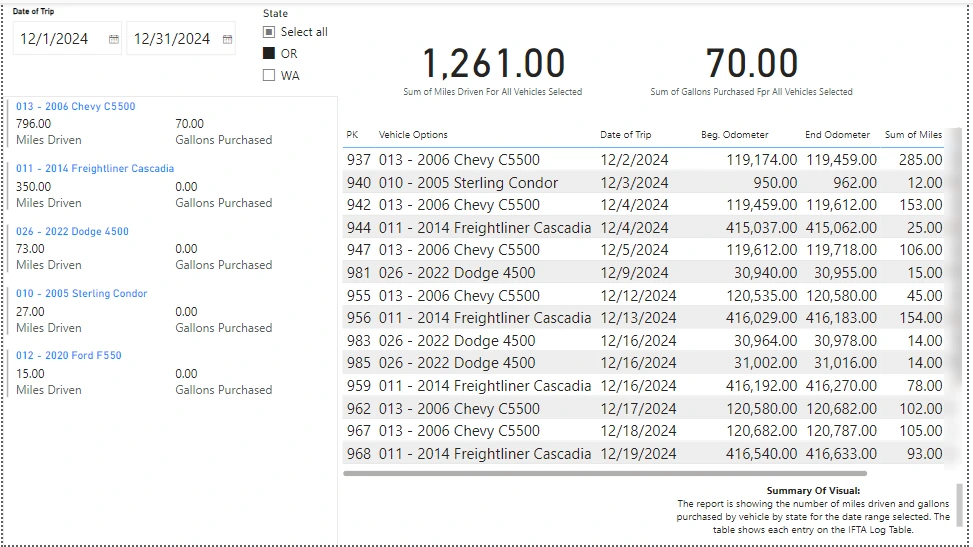
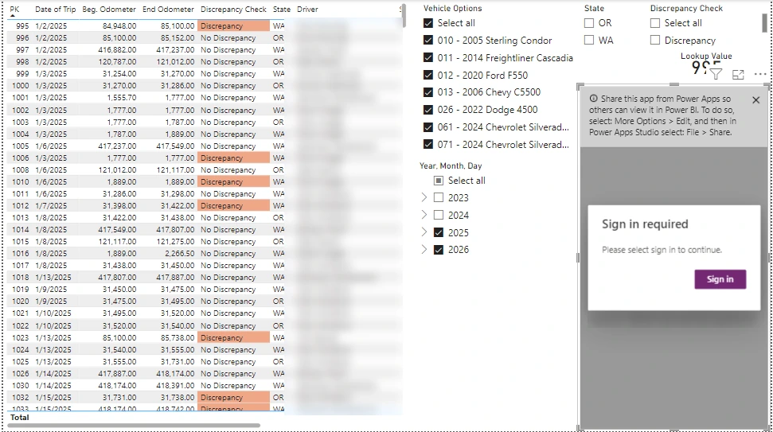

Power BI · Dataverse · Embedded Power Apps · Wolf Industries
Approach highlighted
Writeback from inside the report. An embedded Power Apps visual lets the user correct a trip record without leaving Power BI, so the person who finds an odometer discrepancy can fix it on the spot.
Project Summary
Wolf Industries runs trucks in Oregon and Washington, and IFTA (the International Fuel Tax Agreement) requires reporting the miles driven and fuel purchased in each state. Each trip was logged in a Dataverse table: vehicle, date, beginning and ending odometer, miles, gallons purchased, state and driver. This report turns that log into the numbers needed for the filing, and finds the entries that would make the filing wrong.

Three Pages, Three Jobs

Fixing the Data Without Leaving the Report
Selecting a flagged trip passes it to the embedded Power Apps visual, which shows that record's details and lets the user correct the odometer readings or other fields. The change is written straight back to the Dataverse table, so reporting and correcting happen in one place, by the person who spotted the problem.
Skills Demonstrated
Power BI Desktop with Dataverse, the Power Apps visual for Power BI (writeback), data-quality checks, slicers and page-level filters, regulatory reporting, and in-report guidance through summary text on each page.
More Power BI reports